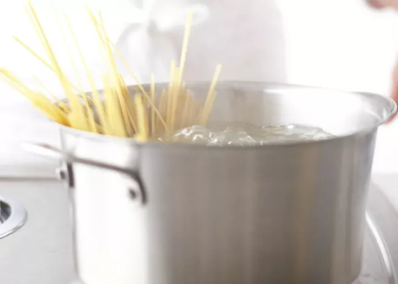

Go back
Pasta recipe

Description
The simplest way to cook pasta. If you can boil water, you can cook pasta. Here are a few simple tricks to doing it right.
Ingredients and equipment
- 1 pound uncooked pasta
- A large (6- to 8-quart) pot
- Four to six quarts of cold water
- 1-2 tablespoons of salt
- A long-handled heat-proof spoon
- A colander for draining the pasta
Steps
- Bring the water to a full, rolling boil. Before adding the pasta, add salt to the boiling water.
- Stir gently.
- Cook your pasta at a rapid boil until it's tender but slightly firm to the bite.
- Drain the pasta in a colander.
- Serve pasta immediately.